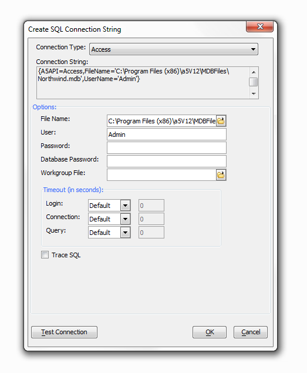

Create SQL Connection String Dialog
The SQL Connection String dialog helps you
define the connection string that you need to open a connection with an
external database. There are several ways to access the SQL Connection String
Dialog if you are not entirely familiar with it.
1. You can reach the SQL Connection
String Dialog dialog by clicking on the
Tools
tab at the top of the screen. Under Tools,
select External Databases and under External
Databases select AlphaDAO connections. This should
load the AlphaDAO connections dialog, if you have nothing to connect click the
New button at the bottom of the screen. This
will load the New AlphaDAO connection Dialog. Type
in the name of your connection and click Build.
This should take you to the Create SQL Connection String
Dialog.
2. Alternatively, with the Web
Projects Control Panel open, you can click
Edit and scroll down
to Manage Connection Strings
option on the cascading list. Click on
AlphaDAO Connection Strings
option. This will load the AlphaDAO Connection Strings
Dialog. Click New, or
choose an existing connection and click Edit,
this will load the New AlphaDAO connection Dialog. Type
in or approve the name of your connection and click Build.
This should take you to the Create SQL Connection String
Dialog.
3. The SQL Connection String Dialog
also appears via the Grid Builder. To get to the grid
builder Click the Create a new grid component button
at
the top of the Web Projects Control Panel. This will bring you to the
Select Grid Component
Template Dialog. Here you have the option of working with a blank grid
component or choosing from a list of pre-existing templates. Choose an option and click
OK.
This will bring you to the Grid Builder Dialog. Go
to Query (AlphaDAO) under
grid. Select 'Specify Connection String' under the
Connection type drop down and click
Build. This will load the
SQL Connection String Dialog as well.
|
- Select a Connection Type. The options include:
- "Access"
- "DB2"
- "Excel"
- "MySQL"
- "OCI"
- "ODBC"
- "Oracle"
- "OracleLite"
- "QuickBooks"
(requires QOBC license)
- "SQLAnywhere"
- "SQLServer"
- "Sybase"
-
Some data sources
first require that you select a file.
-
If the File
Name control appears, click
 to navigate to and select
a database.
to navigate to and select
a database.
- If the User control appears, and a login is required, enter your user name.
- If the Password control appears, and a login is required, enter your password.
- If the Additional Parameters control appears, enter any additional parameters that
may be required to connect with the database.

-
Some data sources
first require that you select a server.
- If the Hostname
control appears, enter the URL of the server.
- If the Port control appears, enter the port number that the database monitors.
- If the User control appears, and a login is required, enter your user name.
- If the Password
control appears, and a login is required, enter your password.
- If the Database list appears, click Refresh and select a database.
See Also
Enterprise Reporting